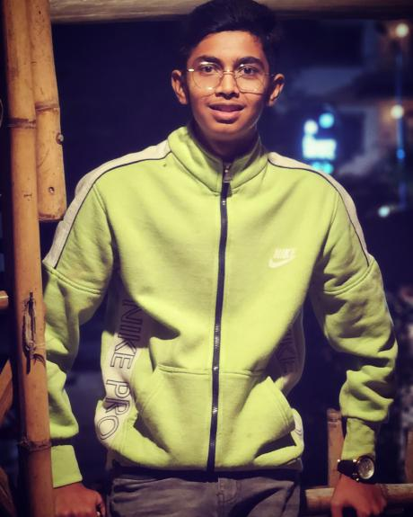

Our Mission
We are dedicated to creating a cleaner, greener future by empowering communities to actively engage in sustainable waste management practices. Through education, collaboration, and technology, we’re making it easy and rewarding to make a difference.
Our Story
Our journey started with a simple idea: communities have the power to make meaningful changes in waste management. With that belief, we launched this platform to bring people together and foster a culture of environmental stewardship in rural and tier 3 cities.
Our Impact
Since our inception, we’ve partnered with local businesses, volunteers, and environmental groups to clean up communities, increase recycling, and raise awareness about sustainable practices. Together, we’re building a resilient future.
Meet the Team
Our team is a group of dedicated individuals passionate about sustainability and community engagement. From educators to environmental experts, we’re united in our goal of creating a lasting impact.
